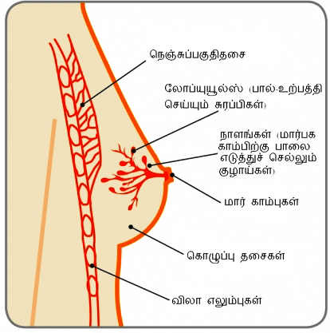
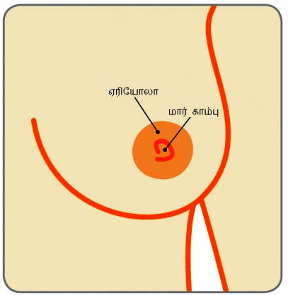

அக்குள் அசெஸரி மார்பகங்களை

பெரும்பாலான மார்பக மாற்றங்கள் தீங்கு விளைவிக்காத்தாக (புற்று-நோய் இல்லாத்தாக) இருப்பதற்கான வாய்ப்புள்ளது. இருந்தாலும், மாற்றங்களை ஆரம்பத்திலேயே கண்டறிவது மார்பக புற்றுநோயைக் கண்டறிவதற்கு வழிவகுக்கும். இது வெற்றிகரமான சிகிச்சைக்கான சிறந்த வாய்ப்பை அளிக்கிறது. இது குறிப்பிடதக்க அளவில் ஒரு பெண்ணின் உயிர் வாழ்வதற்கான வாய்ப்புகளை மேம்படுத்துகிறது..
இந்த தகவல் முதன்மையாக பெண்களுக்கு அறிவு சார்ந்த சக்தி அளிப்பதற்கான குறிக்கோளைக் கொண்டிருந்தாலும், ஆண்களும் அவர்களுடைய மார்பக திசுக்களில் ஏற்படும் ஏதாவது மாற்றங்கள் குறித்து தெரிந்து கொள்ள வேண்டிய தேவை உள்ளது. ஆண்களுக்கும் மார்பக புற்றுநோய் ஏற்படக்கூடும் என்பது பலருக்கு தெரியாது. ஒவ்வொரு வருடமும் ஒரு சிறு சதவிகித ஆண்களுக்கு மார்பக புற்றுநோய் ஏற்படுகிறது. (1 சதவிகித மார்பக புற்றுநோய் ஆண்களில் ஏற்படுகிறது – அதாவது 1/100).
மார்பகம்

மார்பகங்கள், தாய்மைக்கான சுரப்பிகள் (மேமரி க்ளான்ட்ஸ்) என்றும் அறியப்படுகிறது. இவை குழந்தை பிறப்பின் போது ஏற்படும் ஹார்மோன் மாற்றங்கள் காரணமாக பாலை உற்பத்தி செய்கிறது. அவை முக்கியமாக கொழுப்பு திசுக்களால் ஆனது. இது நெஞ்சுப் பகுதியில் உயர்வாகத் தொடங்கி அக்குள் பகுதி வரை கீழ் நோக்கி நீள்கிறது. தசைநார்கள் மற்றும் பெரிய தசைகள்கள் இவற்றை தாங்கிப் பிடிக்கிறது.
ஒவ்வொரு 15-20 லோப்களைச் (சிறு உருண்டை வடிவங்களைக்) கொண்டிருக்கிறது. இது பல லோப்யூல்கள் (பால்-உற்பத்தி செய்யும் சுரப்பிகள்) மற்றும் நாளங்களைக் கொண்டிருக்கிறது. இது கொழுப்பு நிறைந்த மற்றும் ஆதரவான திசுக்களால் சூழப்பட்டிருக்கிறது (படத்தைப் பார்க்கவும்). ஒவ்வொரு லோப்யூலும் (பால்-உற்பத்தி செய்யும் சுரப்பிகள்) 30 முக்கிய நாளங்களைக் கொண்டிருக்கிறது. இவை மார்காம்புகளில் திறக்கிறது. மார்காம்புகளைச் சுற்றியுள்ள அடர்ந்த நிறும் கொண்ட சரும்ம் ஏரியோலா என்றழைக்கப்படுகிறது.
ஒவ்வொரு அக்குளகுழியிலும், சுமார் 20-30 லிம்ப் நோட்கள் (சுரப்பிகள்) மார்பகத்திலிருந்து திரவங்களை வடிக்கிறது. இவை சுரப்பிகள் மண்டலத்தில் ஒரு பகுதியாகிறது. இது உடல் கிருமித் தொற்றை எதிர்த்து போராடுவதில் உதவுகிறது. ஒரு மார்பகம் மற்றதை விட பெரியதாக இருப்பது பொதுவானது மற்றும் இது மிகவும் சாதாரணமானது.
மார்பு காம்பு

மார்காம்புகள் வழக்கமாக முன்னோக்கி இருக்கும், இருந்தாலும் அவை ஒவ்வொரு மார்பகத்தின் மீதும் வித்தியாசமானதாக தோற்றமளிக்கலாம். ஒன்று அல்லது இரு மார்காம்புகளும் உள்நோக்கி திரும்பி இருப்பது (தலைகீழாக) இருப்பது வழக்கத்திற்கு மாறானது அல்ல. இது பிறப்பின் போது இருக்கலாம். அல்லது மார்பகங்கள் வளர்ச்சியடையும் போது ஏற்படலாம். மார்பகங்கள் முடியில்லாதவை. ஆனால் சில பெண்கள் ஏரோலாவைச் சுற்றி சில முடிவுகளைக் கொண்டிருக்கலாம்.
சிறு எண்ணிக்கையிலான பெண்கள் கூடுதலாக ஒரு மார்பு அல்லது ஒரு ஜோடி மார்பகங்களைக் கொண்டிருக்கறார்கள். இவை இணை மார்பகங்கள் என்றும் அறியப்படுகிறது. இவை வழக்கமாக தாழ்வான அக்குள் பகுதியில் இருக்கும். சில பெண்களுக்கு கூடுதல் மார்காம்பு அல்லது மார்காம்புகள் இருக்கும். இவை வழக்கமாக மார்பகத்திற்கு கீழே அல்லது தொப்புளுக்கு மேலே இருக்கும். இணை மார்பகங்கள் மற்றும் கூடுதல் மார்காம்புகள் வழக்கமாக ஒரு பிரச்சனை அல்ல மற்றும் அகற்றப்பட வேண்டிய தேவையில்லை.
அக்குள் அசெஸரி மார்பகங்களை
பருவமடைந்த நேரத்திலிருந்து வளர் இளம்பருவம், குழந்தைபேறுக்கான வருடங்கள் மற்றும் மாதவிடாய் காலம் (வாழ்க்கை மாற்றம்) முழுவதிலும் மார்பகங்கள் தொடர்ச்சியாக மாற்றம் அடைகிறது. வெவ்வேறு பெண் ஹார்மோன் இஸ்ட்ரோஜென் அளவுகளினால் பாதிக்கப்படுகிறது
பெரும்பாலான சிறுமிகளின் மார்பகங்கள் 9-11 வயதில் வளர்ச்சியடையத் தொடங்குகிறது. ஆனால் அது முன்னர் அல்லது பின்னர் நிகழலாம். மார்பகங்கள் வெவ்வேறு விகிதங்களில் வளர்வது வழக்கத்திற்கு மாறானது அல்ல. மார்பகங்கள் வளர்ச்சியடையும் போது மார்பக கட்டிகள் ஏற்படலாம். இவை எப்போதுமே தீங்கு விளைவிக்காதவை மற்றும் வழக்காக அவை கண்டறியப்பட்டவுடன் எந்த சிகிச்சையும் தேவையில்லை..
மார்பகங்கள் வளர்ச்சியடையும் போது, மாதாந்திர மாதவிடாய் சுழற்சி தொடர்பான மாற்றங்கள் (சுழற்சியில் மார்பக மாற்றங்கள்) பொதுவானவை. ஒரு மாதவிடாய் காலத்திற்கு பின், இந்த கட்டித்தன்மை குறைவாகவே தெளிவாகத் தெரியும் அல்லது மொத்தமாக மறையக்கூடும் (இருந்தாலும் சில பெண்களுக்கு எல்லா நேரங்களிலும், மென்மையான, கட்டியான மார்பகங்கள் இருக்கலாம்). பல பெண்கள் அவர்களுடைய மாதவிடாய் சுழற்சியுடன் இணைந்த மார்பக வலியைக் கொண்டிருக்கிறார்கள். மேலும் தகவலுக்கு மார்பக வலி குறித்த தகவல் தொடரைப் பார்க்கவும்.
கர்ப்பகாலம் முழுவதிலும் பாலூட்டுவதற்கு தயாராவதில் மார்பகங்கள் மாற்றமடைகின்றன. முதலில், அவை மிகவும் மென்மையானதாக மற்றும் அதிக உணர்வு பூர்வமானதாகிறது. மார்பகங்கள் மற்றும் ஏரோலா மிகவும் பெரியதாகிறது (பால்-உற்பத்தி செய்யும் செல்களின் எண்ணிக்கை அதிகரிப்பதால்) மற்றும் சருமத்தின் மீதுள்ள இரத்தக் குழாய்கள் அதிகம் தெரியக்கூடியதாகிறது. மார்காம்புகள் அடர்ந்த நிறம் கொண்டதாக மாறுகிறது. மற்றும் கர்ப்ப காலத்தைத் தொடர்ந்தும் அப்படியே இருக்கலாம்.
பாலூட்டும் போது, அதிக அளவிலான பால் உற்பத்தி செய்யப்படுகிறது மற்றும் ஒரு நாளில் பல முறை மார்பகங்களின் சைஸ் மாற்றம் அடைகிறது. பாலூட்டுவதை நிறுத்தும் பொது மார்பகங்கள் படிப்படியாக பழைய சைசிற்கு செல்கிறது. இருந்தாலும் அவை வேறொரு அளவில் அல்லது குறைவான இறுக்கத்துடன் இருக்கலாம்
மார்பக திசுக்கள் வயதுடன் மாற்றமடைகிறது. அது அதன் இறுக்கமானதன்மையை இழக்கத் தொடங்குகிறது. மற்றும் பால்-உற்பத்தி செய்யும் திசுக்களுக்கு பதிலாக கொழுப்பு இடம் பெறத் தொடங்குகிறது. இது மார்பகங்களைத் தொங்க வைக்கிறது. இது மாதவிடாய்க்கு பின் ஈஸ்ட்ரோஜென் அளவுகள் கீழே செல்லும் போது மற்றும் மாதவிடாய் நின்றபின் அதிகம் கவனிக்க்க்கூடியதாக இருக்கிறது. ஒருவருக்கு வயதாகும் போது, மார்பகங்கள் அளவில் மாற்றலாம். ஹெச் ஆர் டீ (ஹார்மோன் ரீப்ளேஸ்மென்ட் தெரபி) எடுத்துக் கொண்டிருக்கிறார் என்றால், மார்பகங்கள் உறுதியாக உணரலாம் மற்றும் சிலநேரங்களில் ஓரளவு மென்மையாக உணரலாம்..
உங்கள் உடலுக்கான அக்கறைக் காட்டுவதில் மார்பகம் குறித்த விழிப்புணர்வு முக்கியமான ஒரு பகுதி. மார்பகம் குறித்த விழிப்புணர்வுடன் இருப்பது என்பது உங்கள் மார்பகங்களை நன்றாக தெரிந்து வைத்திருப்பது மற்றும் உங்கள் வாழ்க்கை முழுவதிலும் அவை எப்படி மாறுகிறது என்பதை தெரிந்து வைத்திருப்பதாகும். உங்கள் மார்பகங்கள் சாதாரணமாக எப்படி தோற்றமளிக்கிறது மற்றும் உணர்கிறது என்பதை தெரிந்து கொள்வதைக் குறிக்கிறது. இதனால் உங்களுக்கு வழக்கத்திற்கு மாறானதாக இருக்க்கூடிய எந்த மாற்றத்தையும் கவனிப்பது பற்றி நீங்கள் நம்பிக்கையாக உணர்வீரகள். ஒவ்வொருவரின் மார்பகங்களும் வித்தியாசமானதாக தோற்றமளிக்கிறது மற்றும் உணர்கிறது. சிலர் கட்டியான மார்பகங்களைக் கொண்டிருக்கலாம், அல்லது ஒரு மார்பகம் மற்றதை விட பெரியதாக இருக்கலாம், அல்லது வெவ்வேறு வடிவங்களில் மார்பகங்களில் கொண்டிருக்கலாம். சிலருக்கு ஒன்று அல்லது இரு மார்காம்புகளும் உள்ளே இழுத்துக் கொண்டிருக்கலாம் (தலைகீழாக இருக்கலாம்). இது பிறப்பிலிருந்து இருக்கலாம் அல்லது மார்பகங்கள் வளர்ச்சியடையும் போது ஏற்படலாம். நீங்கள் உங்கள் மார்பகங்களைச் சரிபார்க்கும் போது, உங்களுக்கு வித்தியாசமானதாக எந்த மாற்றங்களையும் குறித்து விழிப்புணர்வுடன் இருக்க முயற்சி செய்யவும்
அவ்வப்போது உங்கள் மார்பகங்களை கவனிக்கும் மற்றும் உணர்ந்து பார்க்கும் பழக்கத்தை மேற்கொள்ளுங்கள். இதனைச் செய்வதற்கு நிர்ணயிக்கப்பட்ட வழி எதுவுமில்லை. மற்றும் ஒரே நேரத்தில் பார்க்கவும் உணரவும் தேவையில்லை. சில பெண்கள் உடை மாற்றும் போது அல்லது உடையைக் கழட்டும் போது – குளிக்கும் போது அல்லது சவர் செய்யும் போது அல்லது பாடி லோசன் போடும் போது அதனைச் செய்கிறார்கள். சில பெண்கள் ஒரு கண்ணாடியை உபயோகிக்கிறார்கள். சிலர் அதனை உபயோகிப்பதில்லை. உங்களுக்கு எது சௌகரியமானது மற்றும் உங்களுக்கு எப்போது சௌகரியமானது என்பதை நீங்களே முடிவு செய்யலாம்.
முக்கியமான ஒரு விசயம் என்னவென்றால் மார்பகத்தின் அனைத்து பகுதிகளையும், உங்கள் நெஞ்சின் மேல் பகுதியிலிருந்து , கீழே உங்கள் அக்குள் பகுதியைச் சுற்றியும் தொட்டு உணர வேண்டும்.
உங்கள் மார்பகங்களின் அனைத்து பாகங்கள், உங்கள் அக்குள்குழிகள் மற்றும் உங்கள் கழுத்து எலும்புவரை மாற்றங்கள் ஏற்படுகிறதா என பரிசோதிக்கவும்..
என்னென்ன மாற்றங்களை நான் தெரிந்து வைத்திருக்க வேண்டும்?
உங்களுக்கு புதியதாக அல்லது வித்தியாசமானதாக உள்ள ஏதாவது மாற்றங்களை நீங்கள் தெரிந்து வைத்திருக்க வேண்டும். அவை கீழே அளிக்கப்பட்டிருக்கிறது

உபயம் : மார்பக புற்றுநோய் பராமரிப்பு இங்கிலாந்து

உபயம் : மார்பக புற்றுநோய் பராமரிப்பு – இங்கிலாந்து

உபயம் : மார்பக புற்றநோய் பராமரிப்பு இங்கிலாந்து

உபயம் : மார்பக புற்றுநோய் பராமரிப்பு, இங்கிலாந்து

உபயம் : மார்பக புற்றுநோய் பராமரிப்பு, இங்கிலாந்து

உபயம் : மார்பக புற்றுநோய் பராமரிப்பு, இங்கிலாந்து

உபயம் : மார்பக புற்றுநோய் பராமரிப்பு , இங்கிலாந்து

உபயம் : மார்பக புற்றுநோய் பராமரிப்பு, இங்கிலாந்து

உபயம் : மார்பக புற்றுநோய் பராமரிப்பு, இங்கிலாந்து
மார்பக விழிப்புணர்வு 5 புள்ளி குறிப்பு